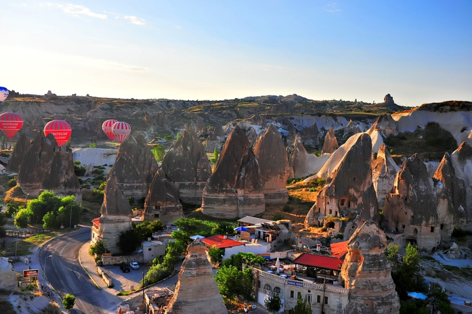
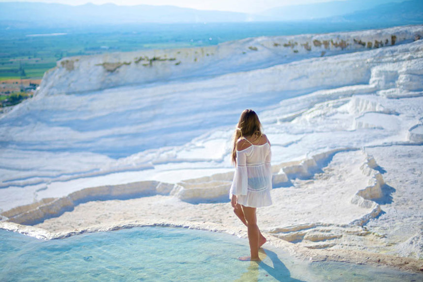
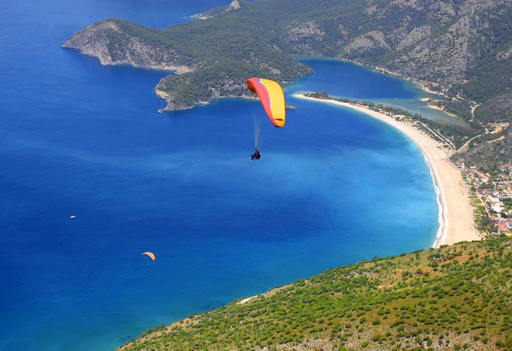
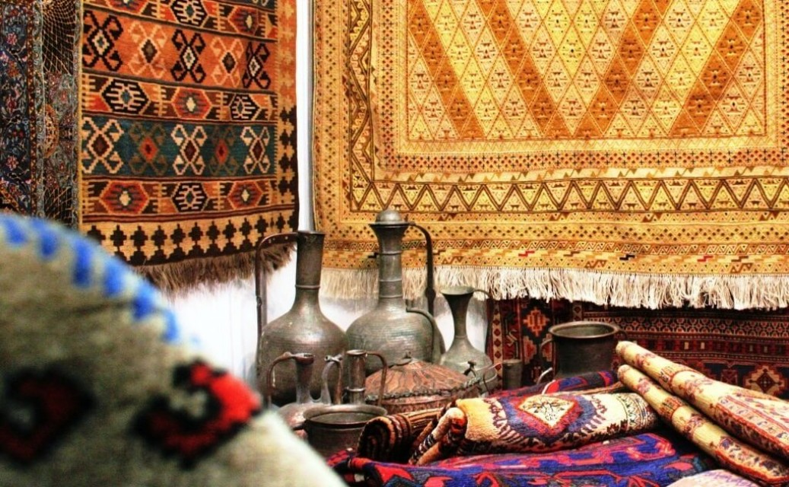
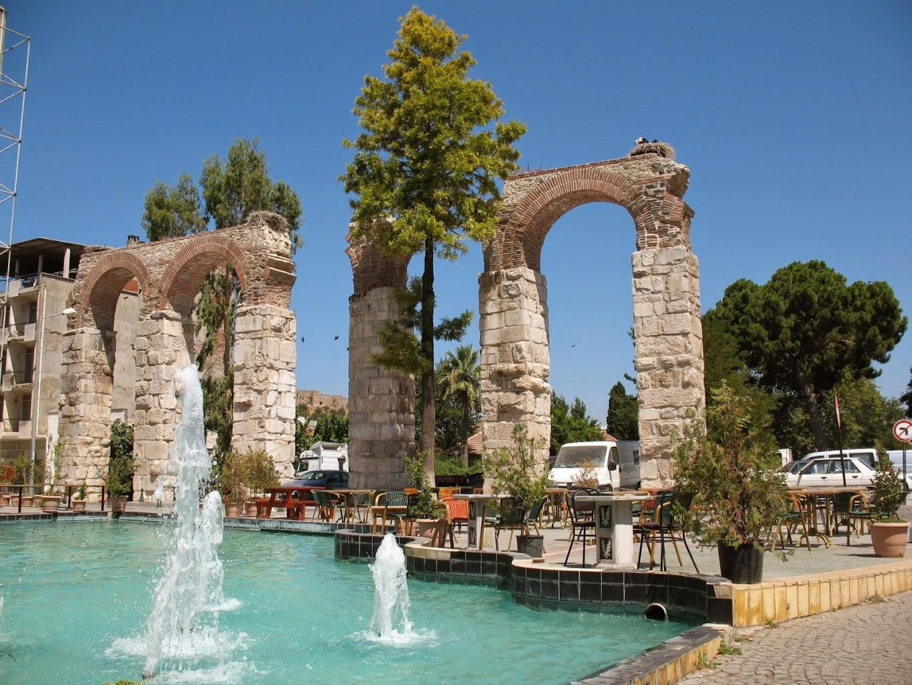
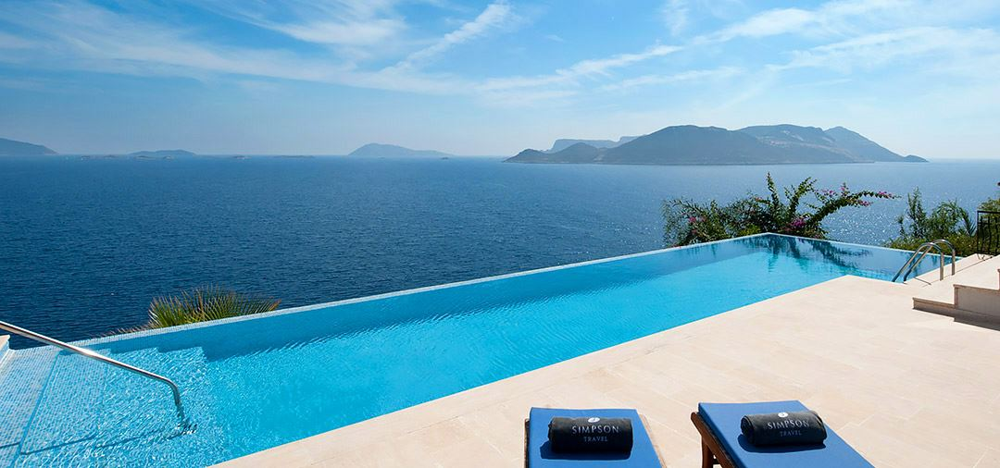
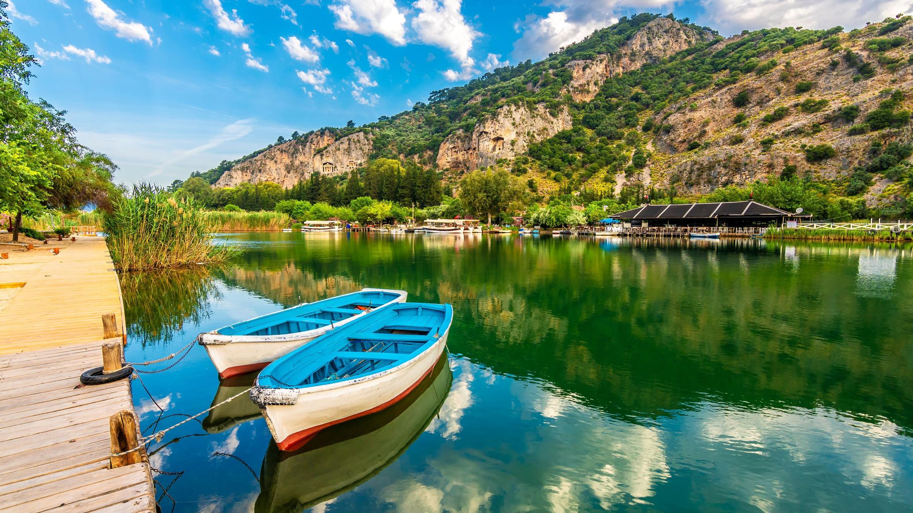
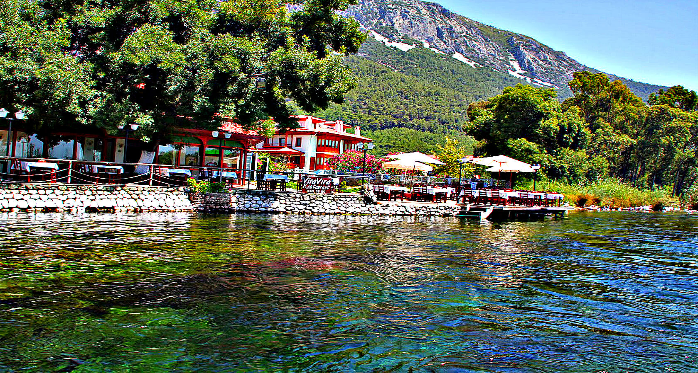
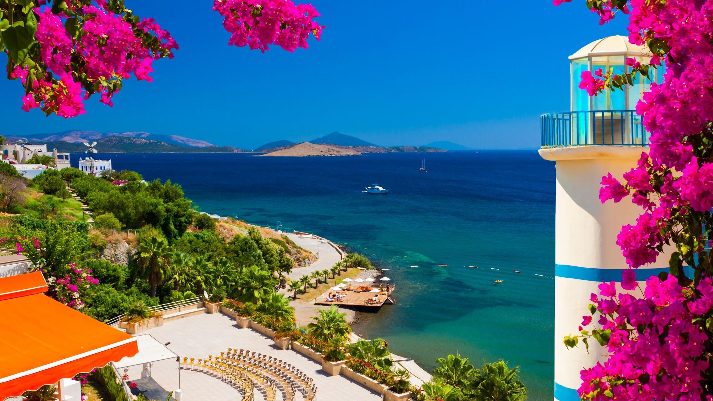

1
Прочувствовать невероятную атмосферу одного из самых космополитичных городов мира, погулять по коридом и дворикам султанского дворца и гарема, увидеть прекрасные мечети, полюбоваться видами Босфора, позавтракать любуясь волшебным видом, побаловать душу и телу в традиционном хамаме, купить сладостей и специй и от души поторговаться на Большом Базаре.
2
Пожить в пещерах, погулять по живописным долинам, увидеть древние пещерные церкви и монастыри, поганять на квадроциклах, полетать на воздушном шаре, побробовать кебаб из глиняного горшка и, конечно же, сделать свое шикарное селфи на фоне невероятных ландшафтов Каппадокии.
3
Побродить босиком по теплому шершавому травентину, полежать в целительной воде местных минеральных источников, попробовать ароматный борек с айраном и полюбоваться драматичным закатом над травентиновыми терассами.
4
Полетать на параглайде, подняться на Ликийскую тропу и найти совершенно прекрасные и релаксные места вдоль побережья.
5
Увидеть какой была Турция сотни лет назад, испытать на себе гостеприимство турецкой глубинки и попробовать крепкий турецкий кофе на углях и лучший в мире шафрановый лукум.
6
Покататься на скутере или велосипеде, исследовать древний Эфес, загадать желание в капеле Девы Марии, побродить по улочкам очаровательной греческой деревни Сириндже и искупаться на диком пляже.
7
Поселиться в одном из гедонистических мест полуострова Чукурбаг с приятной расслабленной атмосферой и шикарными видами, провести день под парусами на традиционном турецком гулете и побывать на самых живописных пляжах Турции.
8
Пройти по реке на маленькой традиционной лодке, полюбоваться высеченными в скалах ликийскими гробницами, иследовать руины древнего города, поваляться в лечебных грязях, понаблюдать за черепашками и провести время в удовольствие на одном из самых красивых пляжей Турции.
9
Погулять по одному из самых атмосферных «медленных городов» Турции, полюбоваться красивенными пейзажами не испорченными массовым туризмом и оценить вкусности, которые готовят маленькие местные рестораны.
10
Полюбоваться очаровательной архитектурой, расслабиться с коктейлем и книжкой у моря, посерфить , поесть морепродуктов и окунуться в живительный ритм ночного приморского города.
